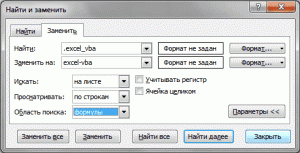

Tips_Macro_ReplaceHyperlinks.xls (46,0 KiB, 4 505 скачиваний)
Tips_Macro_ReplaceHyperlinks.xls (46,0 KiB, 4 505 скачиваний)В этой статье я покажу как можно быстро и качественно изменить адреса гиперссылок на листе Excel.
Существуют ситуации, когда на листе есть много гиперссылок(если еще на знакомы с гиперссылками - Что такое гиперссылка?) на различные папки или интернет ресурсы. И иногда случаются ситуации когда адреса этих гиперссылок надо поменять. Как правило это происходит если либо домен сменился, либо на сервере добавилась директория и эти изменения надо отразить в гиперссылках, либо все просто было перемещено в другую папку. Для примера возьмем такие исходные данные: надо заменить текст ссылки .excel_vba на текст excel-vba.
Прежде чем начать замену необходимо еще определить каким способом установлена гиперссылка. Если установлена через формулу ГИПЕРССЫЛКА, то все просто:

Теперь адреса ссылок должны поменяться.
Все гораздо сложнее, если гиперссылки были созданы через стандартное меню: правый клик мыши на ячейке - Гиперссылка. Тут фокус с заменой через Ctrl+H не пройдет. В таких случаях придется прибегнуть к помощи VBA(Visual Basic for Applications) или как чаще называют эти коды - макросы. Текст такого макроса:
Sub Replace_Hyperlink() Dim rCell As Range, rRange As Range, sWhatRep As String, sRep As String On Error Resume Next Set rRange = Application.InputBox("Укажите диапазон для замены", "Выбор данных", Type:=8) If rRange Is Nothing Then Exit Sub sWhatRep = InputBox("Что меняем?", "Ввод данных", ".excel_vba") sRep = InputBox("На что меняем?", "Ввод данных", "excel-vba") If sWhatRep = "" Then Exit Sub If sRep = "" Then If MsgBox("Хотите заменить " & sWhatRep & " на пусто?", vbCritical + vbYesNo, "Предупреждение") = vbNo Then Exit Sub End If Application.ScreenUpdating = 0 For Each rCell In rRange If rCell.Hyperlinks.Count > 0 Then If rCell.Hyperlinks(1).Address = rCell.Value Then rCell = Replace(rCell.Value, sWhatRep, sRep) End If rCell.Hyperlinks(1).Address = Replace(rCell.Hyperlinks(1).Address, sWhatRep, sRep) rCell.Hyperlinks(1).SubAddress = Replace(rCell.Hyperlinks(1).SubAddress, sWhatRep, sRep) End If Next rCell Application.ScreenUpdating = 1 End Sub
Как все это использовать:
Примерно так же можно заменить гиперссылки в объектах на листе(например, картинках и кнопках):
Sub Replace_Hyperlink_inShape() Dim oSh As Shape, sWhatRep As String, sRep As String Dim s As String sWhatRep = InputBox("Что меняем?", "Ввод данных", "www.excel-vba.com") sRep = InputBox("На что меняем?", "Ввод данных", "www.excel-vba.ru") On Error Resume Next For Each oSh In ActiveSheet.Shapes s = "" s = oSh.Hyperlink.Address If s <> "" Then oSh.Hyperlink.Address = Replace(oSh.Hyperlink.Address, sWhatRep, sRep) End If Next End Sub
Данные код работает почти так же как и предыдущий:
Гиперссылки всех объектов на листе будут изменены. Если у объекта нет гиперссылки - объект будет пропущен.
Чтобы заменить гиперссылки только в выделенных объектах необходимо строку
For Each oSh In ActiveSheet.Shapes
заменить на такую:
For Each oSh In Selection.ShapeRange
тогда надо будет выделить объекты на листе, для которых необходимо заменить гиперссылки, и запустить макрос.
Скачать пример
Tips_Macro_ReplaceHyperlinks.xls (46,0 KiB, 4 505 скачиваний)
Так же см.:
Что такое гиперссылка?